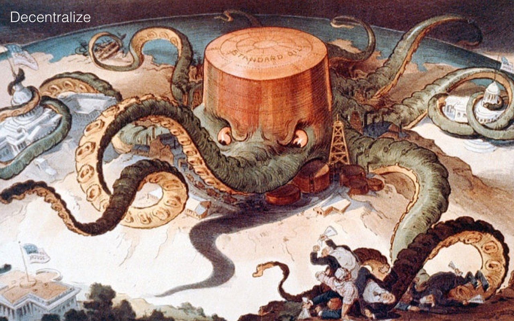
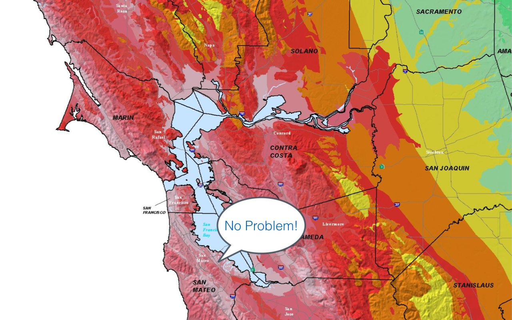
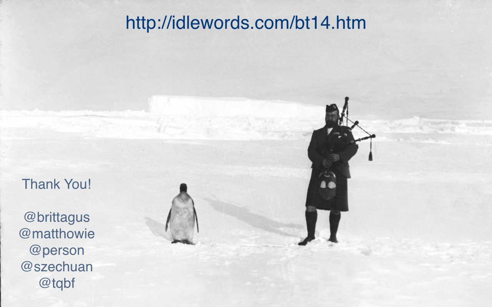

It should be illegal to collect and permanently store most kinds of behavioral data.
In the United States, they warn us the world will end if someone tries to regulate the Internet. But the net itself was born of a fairly good regulatory framework that made sure de facto net neutrality existed for decades, paid for basic research into protocols and software, cleared the way for business use of the internet, and encouraged the growth of the commercial web.
It's good regulation, not lack of regulation, that kept the web healthy.
Here's one idea for where to begin:
I was very taken with Bastian Allgeier's talk yesterday on decentralization. And we'll be discussing a lot of these issues at Decentralize Camp tomorrow. Folklore has it that the Internet was designed to survive a nuclear war. Bombs could take out lots of nodes, but the net would survive and route around the damage. I think this remains a valuable idea, though we never quite got there. A good guiding principle is that no one company, or one country, should have the ability to damage the Internet, even if it begins to act maliciously.
We have a broad consensus on the need to decentralize the web; the question is how to do it. In this respect, I think even a little decentralization goes a long way. Consider how much better it is to have four major browser vendors, compared to the days of Internet Explorer. Some kinds of services are just crying out for decentralization. Fifty years from now, people will be shocked that we had one social network that all seven billion people on the planet were expected to join.
Imagine if there was only one bar in Düsseldorf, or all of Germany, and if you wanted to hang out with your friends, you had to go there. And when you did, there were cameras everywhere, and microphones, and you were constantly being interrupted by people selling you stuff. That's the situation that obtains with Facebook today.
Surveillance as a business model is the only thing that makes a site like Facebook possible.
I have always wanted to have a ‚Death to America!' slide. Maybe I should just say ‚de-americanize'. As a naturalized US citizen, whose citizenship can potentially be revoked by court order, let me just say America is the greatest country on Earth, and I am lucky to live there. I am sorry that you can't live there too.
In fact, we're so great that we can probably spare one or two of these giant websites and let you replace them with something based here in Europe. In the past year, you've seen that there is not a lot of concern in America for the privacy rights of the average German citizen. I think ‚zero' would be a fair number to put on that.
If your prime minister can't get us to stop bugging her phone, how secure do you think your own data is, when you send it to California?
And speaking of California, let me try another tack.
This festive map shows seismic hazard in Northern California, where pretty much all the large Internet companies are based, along with a zillion startups. The ones that aren't here have their headquarters in an even deadlier zone up in Cascadia.
Now of course, each company has four zillion datacenters, backed up across the world. But how much will that matter when there's a major quake, and Silicon Valley can't get to work for a month? All of these headquarters are going to be shut down for a long time when the Big One comes. You're going to notice it.
So even if you don't agree with my politics, maybe you'll agree with my geology. Let's not build a vast, distributed global network only to put everything in one place! I'm tired of being scared of what the web is going go look like tomorrow.
Yesterday, during Robin's incredible talk, I realized how long it had been since I looked at a new technology with wonder, instead of an automatic feeling of dread.
[Robin Christiansen gave a profoundly moving talk about the ways in which smartphones, image recognition, wearable computers and other technologies are changing the lives of disabled people. Robin, who is blind, gave live demos of the apps and technologies he uses to better navigate the world, showing the extent to which they've restored his autonomy.]
One of the worst aspects of surveillance is how it limits our ability to be creative with technology. It's like a tax we all have to pay on innovation. We can't have cool things, because they're too potentially invasive.
Imagine if we didn't have to worry about privacy, if we had strong guarantees that our inventions wouldn't immediately be used against us. Robin gave us a glimpse into that world, and it's a glimpse into what made computers so irresistible in the first place.
I have no idea how to fix it. I'm hoping you'll tell me how to fix it. But we should do something to fix it. We can try a hundred different things. You people are designers; treat it as a design problem! How do we change this industry to make it wonderful again? How do we build an Internet we're not ashamed of?
I'd like to thank Britta Gustafson, Matthew Haughey, Diane Person, Sacha Judd and Thomas Ptacek, who helped me greatly with this talk.
[Honorable mention goes to Anil Dash, who liked a photo of it on Facebook.]
Thank you for your kind attention today. I hope you had a wonderful conference.
Stormy, prolonged applause.